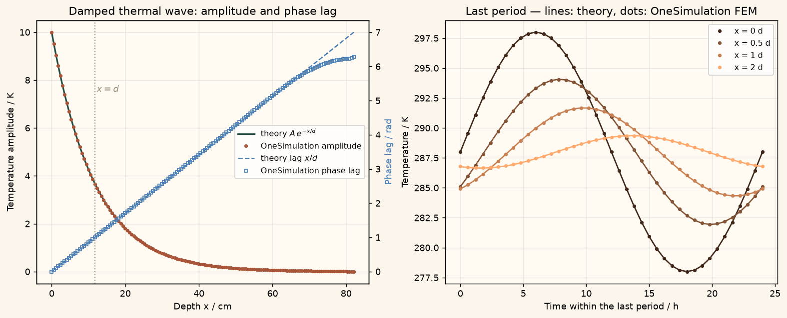

Docs › Examples › Periodic surface temperature wave
Heat transfer · 3D
Periodic surface temperature wave
A daily temperature cycle penetrating the ground, graded against the damped thermal wave.

What it computes
OneSimulation integrates transient conduction in a deep bar driven by a sinusoidal surface temperature over several periods.
What it checks
The amplitude envelope A e^{-x/d} and the phase lag x/d with d = sqrt(2 alpha/omega) match within about 2 %; the fitted penetration depth is within about 0.5 %.
The notebook
The complete notebook, cell by cell. Run it to produce the figures and the comparison printout.
The surface of a thick body (for example the ground under the daily temperature cycle) oscillates sinusoidally about a mean value, \(T_s(t)=T_m+A\sin(\omega t)\). Heat conduction carries this oscillation into the solid as a damped thermal wave: with increasing depth the amplitude decays exponentially and the oscillation lags behind the surface. The governing equation is the one-dimensional heat equation
OneSimulation solves it spatially with finite elements (Lagrange order 2) and a BDF2 time step on a real 3D mesh; the lateral faces are insulated and the deep end, several penetration depths down, is held at the mean temperature.
Reference. With the thermal diffusivity \(\alpha=k/(\rho c_p)\) the steady periodic solution is
where \(d\) is the thermal penetration depth: the amplitude falls to \(1/e\) and the phase lags by one radian per depth \(d\). After the start-up transient has died out we fit amplitude and phase at every depth and check both laws.
from importlib.metadata import version
import numpy as np
import matplotlib.pyplot as plt
import matplotlib
from cycler import cycler
from matplotlib.colors import LinearSegmentedColormap
# OneSimulation figure style: cream paper, dark-green ink, green-sand-copper field colours
CREAM, INK, GREEN, COPPER = "#F7F2E7", "#223D35", "#336B57", "#B66E43"
FIELD_CMAP = LinearSegmentedColormap.from_list(
"onesimulation", ["#214D43", "#5F9175", "#A8BC91", "#E4D6A0", "#CD9561", "#A85539"])
DIVERGING_CMAP = LinearSegmentedColormap.from_list(
"onesimulation_diverging", ["#104F54", "#5E9996", "#F7F2E7", "#D2996E", "#A4472D"])
for _cmap in (FIELD_CMAP, DIVERGING_CMAP):
if _cmap.name not in matplotlib.colormaps:
matplotlib.colormaps.register(_cmap)
plt.rcParams.update({
"figure.facecolor": CREAM, "savefig.facecolor": CREAM, "axes.facecolor": "#FFFAF2",
"text.color": INK, "axes.labelcolor": INK, "axes.titlecolor": INK, "axes.edgecolor": "#9FA593",
"xtick.color": INK, "ytick.color": INK, "grid.color": "#D5D7C8", "image.cmap": "onesimulation",
"axes.prop_cycle": cycler(color=[GREEN, COPPER, "#5F9175", "#A85539", "#214D43", "#CD9561", "#8B9A8D"]),
})
from onesim.cad.d3 import Box
from onesim.materials import IsotropicSolid
from onesim.meshing import StructuredHexahedralMesher
from onesim.numerics import Numerics
from onesim.numerics.fem import FiniteElement, Lagrange
from onesim.numerics.linear import SparseDirect
from onesim.numerics.time import BDF, BackwardEuler
from onesim.physics.heat_transfer import FixedTemperature, HeatConduction, HeatFlux
from onesim.simulation import Problem, Simulation
from onesim.simulation.initial_conditions.values import InitialValue
print("OneSimulation:", version("onesimulation"))Parameters
Moist soil under a daily cycle: the penetration depth is about a decimetre. The body lies along \(x\); its cross-section is small and only serves to form a slender 3D mesh. The depth is chosen as seven penetration depths: the wave amplitude there is below 0.1 % of \(A\), so holding the deep end at the mean temperature reproduces the semi-infinite reference.
k = 1.0 # W/(m·K), thermal conductivity (moist soil)
rho = 2000.0 # kg/m^3
cp = 1000.0 # J/(kg·K)
T_m = 288.0 # K, mean surface temperature
A = 10.0 # K, surface temperature amplitude
period = 86400.0 # s, one day
omega = 2.0 * np.pi / period
alpha = k / (rho * cp)
d = np.sqrt(2.0 * alpha / omega) # m, penetration depth
L = 7.0 * d # m, depth of the modelled body
cross = 0.02 # m, lateral size (insulated)
print(f"alpha = {alpha:.3e} m^2/s, penetration depth d = {100*d:.2f} cm, modelled depth L = {100*L:.1f} cm")
periods = 6 # run length: start-up transient decays, response becomes periodic
steps_per_period = 40
time_step = period / steps_per_period
end_time = periods * period
geometry = Box(length=L, width=cross, height=cross)
# Structured hexahedral mesh: many cells along x (the 1D direction), few across.
cells = 64
mesh = StructuredHexahedralMesher(cells=(cells, 1, 1)).generate(geometry)
print("Mesh:", mesh.cell_count, "hexahedra (", round(d / (L / cells), 1), "cells per penetration depth )")Model
The surface (x_min) follows the prescribed sinusoid, the deep end (x_max) is held at the mean temperature and the lateral faces are insulated, so every one of the six boundary faces has an explicit condition. The body starts at the mean temperature; the start-up transient then decays within a few periods.
material = IsotropicSolid(
density=rho, specific_heat_capacity=cp, thermal_conductivity=k,
youngs_modulus=1e9, poisson_ratio=0.3, thermal_expansion_coefficient=1e-5,
)
model = HeatConduction(domain=geometry.volume, material=material, heating=0.0)
def surface_temperature(t):
return T_m + A * np.sin(omega * t)
problem = Problem(
name="Periodic surface temperature wave",
geometry=geometry,
physics=(model,),
boundary_conditions=(
FixedTemperature(boundary=geometry.boundaries.x_min, physics=model, value=surface_temperature),
# deep end at the mean temperature: it lies seven penetration depths down
FixedTemperature(boundary=geometry.boundaries.x_max, physics=model, value=T_m),
# laterally insulated (zero flux) -> 1D behaviour
HeatFlux(
boundary=(geometry.boundaries.y_min | geometry.boundaries.y_max
| geometry.boundaries.z_min | geometry.boundaries.z_max),
physics=model, value=0.0,
),
),
initial_conditions=(InitialValue(model.temperature, T_m),),
)
simulation = Simulation(
problem=problem,
mesh=mesh,
numerics=Numerics(
spatial=FiniteElement(element=Lagrange(order=2)),
linear_solver=SparseDirect(),
time_integrator=BDF(order=2, startup=BackwardEuler()),
),
)
simulation.validate().require_valid()
result = simulation.run(start_time=0.0, end_time=end_time, time_step=time_step)
stored = np.asarray([float(t) for t in result.times])
print(f"Integrated {len(stored) - 1} implicit time steps over {periods} periods")Amplitude and phase lag per depth over the last period
Over the final period we sample the temperature along the centre line at every stored time level and fit, at each depth, a sinusoid \(T-T_m = a\sin\omega t + b\cos\omega t + c_0 + c_1 t\) by least squares. The two drift terms absorb the last remnant of the start-up transient (which decays slowly and is not periodic), so that \(\sqrt{a^2+b^2}\) is the amplitude of the periodic response. It must follow \(A e^{-x/d}\), and the phase lag \(\mathrm{atan2}(-b,a)\) must grow linearly as \(x/d\).
last = stored[stored >= end_time - period - 1e-6]
sample_x = np.linspace(0.0, L, 141)
points = np.column_stack((sample_x, np.full_like(sample_x, cross / 2), np.full_like(sample_x, cross / 2)))
field = result.field(model.temperature)
signals = np.array([np.asarray(field.evaluate(points, time=float(t))).reshape(-1) - T_m for t in last])
basis = np.column_stack((np.sin(omega * last), np.cos(omega * last),
np.ones_like(last), (last - last[0]) / period))
coefficients, *_ = np.linalg.lstsq(basis, signals, rcond=None) # (4, depths)
amplitude = np.hypot(coefficients[0], coefficients[1])
phase_lag = np.unwrap(np.arctan2(-coefficients[1], coefficients[0]))
phase_lag -= phase_lag[0] # zero lag at the surface
# Compare in a clean window: from the surface down to four penetration depths,
# where the signal is still well above the numerical floor.
window = (sample_x >= 0.0) & (sample_x <= 4.0 * d)
x_fit = sample_x[window]
amplitude_reference = A * np.exp(-x_fit / d)
amplitude_error = float(np.max(np.abs(amplitude[window] - amplitude_reference) / amplitude_reference))
phase_reference = x_fit / d
phase_error = float(np.max(np.abs(phase_lag[window] - phase_reference)))
print(f"Max relative deviation of the amplitude from A exp(-x/d) (0 <= x <= 4d): {100*amplitude_error:.2f} %")
print(f"Max absolute deviation of the phase lag from x/d (0 <= x <= 4d): {phase_error:.4f} rad")
# Independent checks: the slope of ln(amplitude) and of the phase lag each
# recover the penetration depth.
slope_amp, _ = np.polyfit(x_fit, np.log(amplitude[window]), 1)
slope_phase, _ = np.polyfit(x_fit, phase_lag[window], 1)
d_from_amplitude = -1.0 / slope_amp
d_from_phase = 1.0 / slope_phase
print(f"Penetration depth: theory {100*d:.3f} cm, from amplitude {100*d_from_amplitude:.3f} cm, "
f"from phase lag {100*d_from_phase:.3f} cm")
# Time of the daily maximum at one penetration depth: lags the surface by d/d = 1 rad.
lag_hours = (phase_lag[np.argmin(np.abs(sample_x - d))] / omega) / 3600.0
print(f"The temperature maximum at depth d arrives {lag_hours:.2f} h after the surface maximum "
f"(reference {period/(2*np.pi)/3600:.2f} h)")Figure
cream = "#fbf5eb"
fig, axes = plt.subplots(1, 2, figsize=(12, 4.8), constrained_layout=True)
fig.patch.set_facecolor(cream)
x_cm = sample_x * 100
ax = axes[0]
ax.set_facecolor("#fffaf2"); ax.grid(alpha=0.25)
ax.plot(x_cm, A * np.exp(-sample_x / d), color="#214D43", lw=1.8, label=r"theory $A\,e^{-x/d}$")
ax.plot(x_cm, amplitude, "o", color="#A85539", ms=3, label="OneSimulation amplitude")
ax2 = ax.twinx()
ax2.plot(x_cm, sample_x / d, color="#5F9175", lw=1.4, ls="--", label=r"theory lag $x/d$")
ax2.plot(x_cm, phase_lag, "s", color="#5F9175", ms=3, mfc="none", label="OneSimulation phase lag")
ax2.set_ylabel("Phase lag / rad", color="#5F9175")
ax.axvline(100 * d, color="#9a8f7d", ls=":", lw=1.2)
ax.text(100 * d + 0.5, 0.75 * A, r"$x=d$", color="#9a8f7d")
ax.set(xlabel="Depth x / cm", ylabel="Temperature amplitude / K",
title="Damped thermal wave: amplitude and phase lag")
lines = ax.get_legend_handles_labels()
lines2 = ax2.get_legend_handles_labels()
ax.legend(lines[0] + lines2[0], lines[1] + lines2[1], loc="center right", fontsize=9)
ax = axes[1]
ax.set_facecolor("#fffaf2"); ax.grid(alpha=0.25)
hours = (last - last[0]) / 3600.0
colors = FIELD_CMAP(np.linspace(0.2, 0.85, 4))
for depth_factor, c in zip((0.0, 0.5, 1.0, 2.0), colors):
i = int(np.argmin(np.abs(sample_x - depth_factor * d)))
ax.plot(hours, T_m + A * np.exp(-sample_x[i] / d) * np.sin(omega * last - sample_x[i] / d),
color=c, lw=1.5)
ax.plot(hours, T_m + signals[:, i], "o", color=c, ms=3, label=f"x = {depth_factor:g} d")
ax.set(xlabel="Time within the last period / h", ylabel="Temperature / K",
title="Last period — lines: theory, dots: OneSimulation FEM")
ax.legend(fontsize=9)
plt.show()Going further
Switch to the annual cycle (period 365 days): the penetration depth grows by \(\sqrt{365}\approx 19\) and reaches several metres, which is why cellars stay cool in summer and the phase lag at a few metres' depth amounts to months. Superpose the daily and the annual cycle in the surface condition; the linear heat equation treats them independently, each with its own \(d\). Halve the time step and refine the mesh to see the small residual errors shrink further.